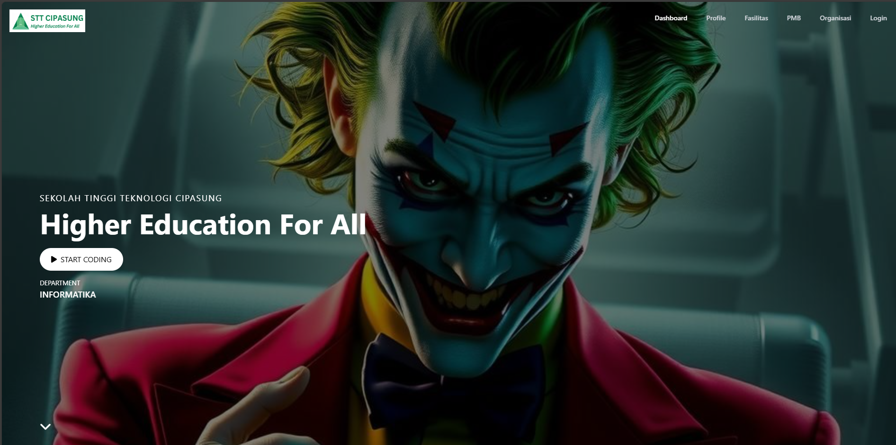
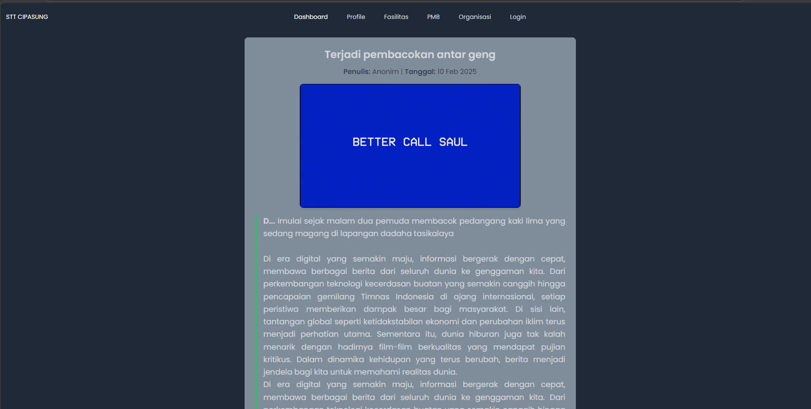
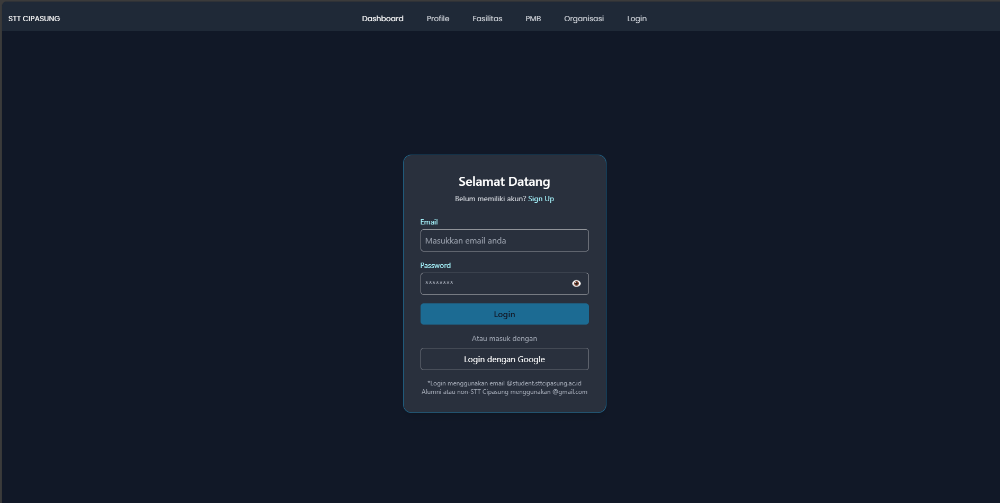
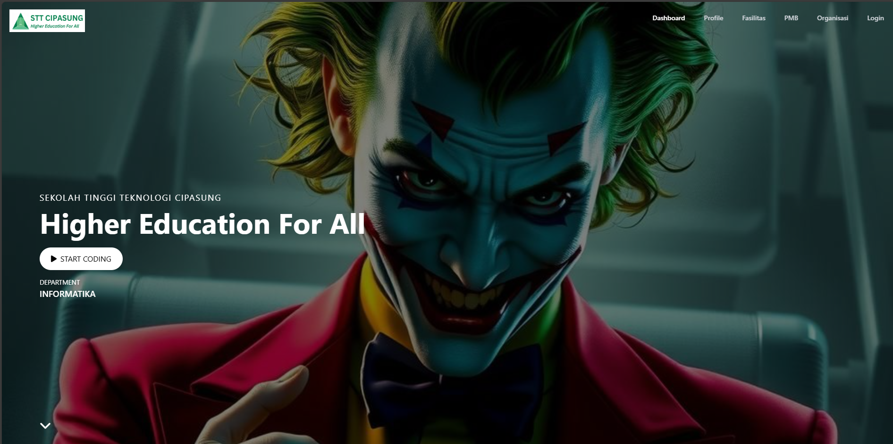
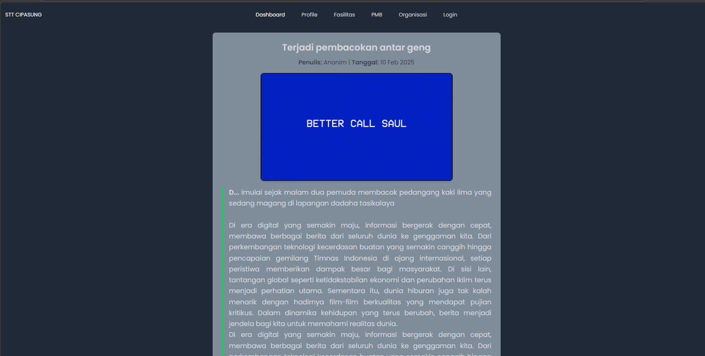
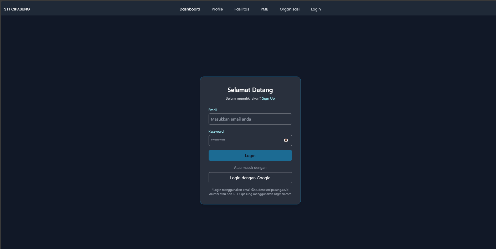

IN WEBSITE TROUBLE?
Better Call Ado!
- • BUILDING APPLICATIONS
- • FIXING LEGACY CODE
- • DEBUGGING NIGHTMARES
- • DATABASE RESTRUCTURING
- • CODE REVIEW DEFENSE
- • DEPLOYMENT EMERGENCIES
* SE HABLA PHP & LARAVEL *
 




